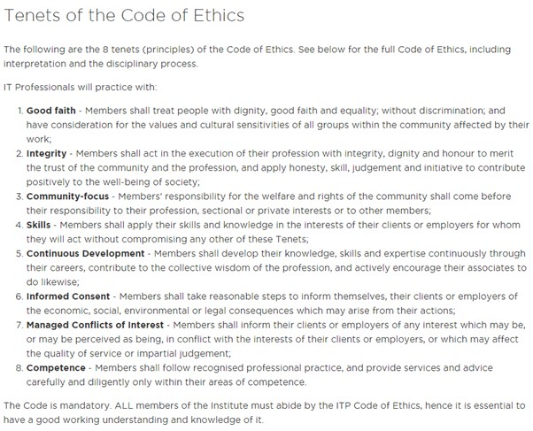

The common voice that I found in many of the academic articles I read whilst researching for the risks of cybersecurity was that here was not enough literature
and policies regarding this concept. Therefore, I believe that there needs to be more of a proactive approach by entities such as; organizations, governments, and businesses,
that hold confidential information as in the wrong hands it would severely affect these individuals. Referencing the ITP Code of Ethics [ITP] (IT Professionals New Zealand, n.d.a),
entities do not always follow all eight of the tenets. These entities often hold information of a cyber attack close as to not stain their reputation, and do not share specific
data of how many are affected by a security breach in their system, this does not follow ITP Code of Ethics tenets 1, 2, & 3; Good Faith, Integrity & Community-focus, respectively.
Figure 1.

The cyber attack on the Waikato District Health Board [DHB] shows that cyber-attacks can disrupt and in this instance shutdown networks and servers for a prolong period. When the attack happened Waikato DHB chief executive Kevin Snee told Newshub that they will be “working with cybersecurity experts” (Binning & Preston, 2021), however it has been two weeks since the attack and they still have not fully recovered their entire system.
Patients’ Rights Advocacy Waikato chairperson Carolyn Mckenize stated that “the government needed to provide more funding and support to DHBs to boost their IT systems” (McRae & Gregan, 2021). I agree with this statement, however I believe that that more funding and support should be given to every cybersecurity department in every organization, business, and government.
If other entities follow the model of the Waikato DHB, then they are risking a serious breach by not proactively updating their systems regularly with a strong team of cybersecurity professionals, not doing so will actively go against tenet 5 of the ITP code of ethics, Continuous Development.
In looking at the ITP corporate partners, it can be seen this organization is not supported by all District Councils (IT Professionals New Zealand, n.d.b). Specifically for New Zealand, I recommend that all District Councils should be supporting this organization so that they understand the importance of the IT Code of Ethics, so that businesses and organizations in their district may comprehend the importance of properly and successfully using their IT departments.
However, all around the world, there needs to be more funding put into cybersecurity so that cybersecurity departments working at different organizations, businesses and governments do not have a limitation to what they can achieve. There also needs to be more literature specifically addressing the risks of cybersecurity, and models in how to effectively safeguard from attacks.
These models should help entities develop policies and networks that can negate the chance of risks, and if an attack were to occur, how to quickly and effectively recover.